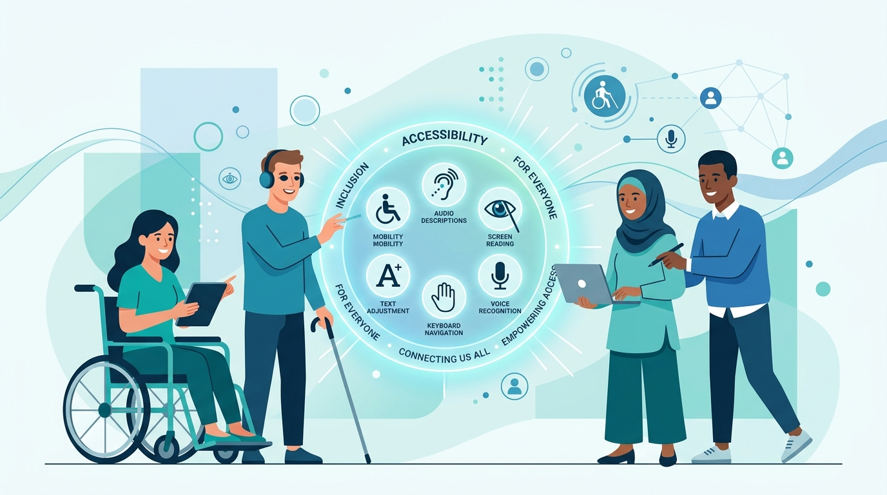

Skip
Step 1 of 3
Step 2 of 3
Step 3 of 3

Why Accessibility Matters
Over a billion people worldwide live with some form of disability. AccessiCheck helps you catch the barriers they face on your website — before your users do.
Grounded in PACT Analysis
Every check we run is based on an established HCI framework — the same one used to design this tool itself.
People
Activities
Context
Technology
Scan Any Website in Seconds
Paste a URL and AccessiCheck scans it using axe-core — the same engine accessibility professionals trust — then shows you a clear, prioritized report.